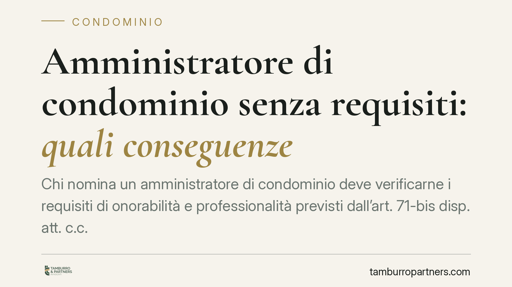

Amministratore di condominio senza requisiti: quali conseguenze
Chi nomina un amministratore di condominio deve verificarne i requisiti di onorabilità e professionalità previsti dall'art. 71-bis disp. att. c.c. Il difetto iniziale o la perdita sopravvenuta producono conseguenze diverse ma ugualmente rilevanti per i condomini e per i fornitori. Analizziamo il quadro normativo, i dubbi interpretativi ancora aperti e le cautele operative da adottare prima di affidare l'incarico.

Il quadro normativo
L'art. 71-bis delle disposizioni di attuazione del codice civile, introdotto dalla legge 11 dicembre 2012, n. 220 (la cosiddetta riforma del condominio), individua i requisiti soggettivi per ricoprire l'incarico di amministratore.
La norma distingue due categorie. I requisiti di onorabilità riguardano l'assenza di condanne per determinati reati, la mancanza di misure di prevenzione e l'assenza di interdizioni o inabilitazioni (lettere a-e del comma 1). I requisiti di professionalità attengono invece al possesso del diploma di scuola secondaria superiore e alla frequenza di un corso di formazione iniziale, con obbligo di aggiornamento periodico (lettere f-g).
Resta una deroga rilevante: il comma 2 esonera dai soli requisiti di professionalità il condomino che amministri lo stabile in cui risiede, purché sia in possesso dei requisiti di onorabilità. È l'ipotesi del condominio di piccole dimensioni gestito internamente, senza affidamento a un professionista esterno.
Difetto iniziale e perdita sopravvenuta: due regimi diversi
Il punto delicato è la conseguenza giuridica del difetto dei requisiti, che non è univoca e va distinta a seconda del momento in cui il vizio si manifesta.
Un conto è il difetto presente già al momento della nomina: qui la giurisprudenza discute se la delibera assembleare sia nulla, annullabile o comunque inefficace. Il dibattito non è chiuso e le ricostruzioni dottrinali divergono, con riflessi concreti sui termini e sulle modalità di impugnazione della nomina.
Diverso è il caso della perdita dei requisiti nel corso del mandato. Il comma 4 dell'art. 71-bis stabilisce in modo espresso che la sopravvenuta carenza di uno dei requisiti costituisce causa di cessazione dall'incarico. In questa ipotesi ciascun condomino può convocare l'assemblea per la nomina del nuovo amministratore, senza che occorra attendere la scadenza naturale.
La differenza non è teorica. Nel primo caso si discute della validità dell'atto di nomina; nel secondo la legge prevede un meccanismo di cessazione che opera a prescindere da un giudizio di invalidità della delibera originaria.
La natura del rapporto e la responsabilità
Il rapporto tra amministratore e condominio è riconducibile allo schema del mandato (artt. 1703 e seguenti del codice civile). L'amministratore è tenuto a eseguire l'incarico con la diligenza del buon padre di famiglia (art. 1710 c.c.) e risponde verso il condominio dell'inadempimento dei propri obblighi.
Di qui le possibili conseguenze in termini di responsabilità e di contestazione del compenso, qualora l'incarico sia stato svolto da soggetto privo dei requisiti. Si tratta però di profili che vanno valutati caso per caso, in base alla fattispecie concreta e all'orientamento giurisprudenziale applicabile, senza automatismi.
Implicazioni pratiche
Per i condomini il rischio è duplice: ritrovarsi con atti di gestione contestabili e dover affrontare contenziosi sulla validità della nomina. Per i fornitori la questione è altrettanto concreta: chi stipula un contratto con il condominio ha interesse a verificare che l'amministratore sia legittimato, perché un difetto di legittimazione può incidere sulla regolarità del rapporto e sulla riscossione dei corrispettivi.
Prima della firma di un contratto di appalto o di fornitura di una certa consistenza, la verifica della posizione dell'amministratore è una cautela tutt'altro che formale.
Cosa fare in concreto
- Richiedi la documentazione attestante i requisiti di onorabilità e professionalità già in sede di nomina: autocertificazioni, attestato del corso iniziale e, per gli amministratori professionali, prova dell'aggiornamento annuale.
- Verbalizza il controllo svolto dall'assemblea, dando atto in delibera dell'avvenuta verifica dei requisiti: una traccia scritta riduce il margine di contestazione futura.
- Verifica l'aggiornamento periodico della formazione nel corso del mandato, così da intercettare per tempo un'eventuale causa di cessazione ex comma 4.
- Agisci con tempestività se emerge un difetto o una perdita dei requisiti: convoca l'assemblea per provvedere alla sostituzione senza lasciar maturare situazioni di incertezza gestionale.
- Se sei un fornitore, verifica la legittimazione dell'amministratore prima di sottoscrivere contratti rilevanti, chiedendo copia del verbale di nomina e dei requisiti.
Trattandosi di una materia in cui la qualificazione delle conseguenze resta discussa, consigliamo di valutare ogni situazione concreta con il supporto di un professionista, prima di assumere decisioni che possano incidere sulla validità degli atti di gestione.
---
Contributo informativo a cura di Tamburro & Partners Avvocati — Avv. Giuseppe Tamburro. Non costituisce parere legale.
Ogni condominio ha una storia a sé.
Se gestisci un'amministrazione e vuoi un confronto su una specifica questione condominiale, scrivi allo studio. Ti rispondiamo entro un giorno lavorativo.